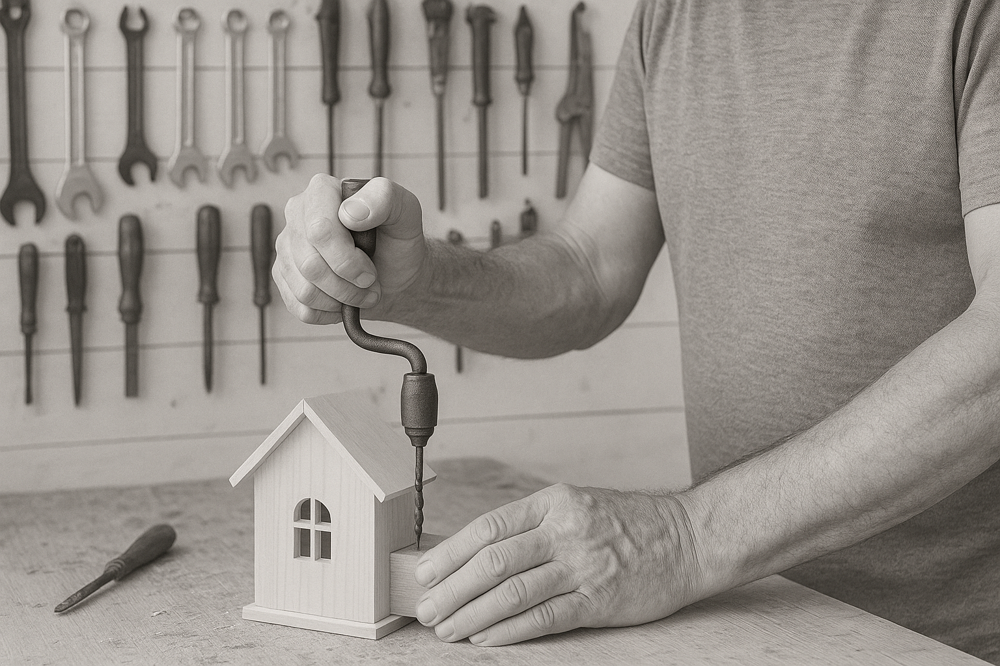
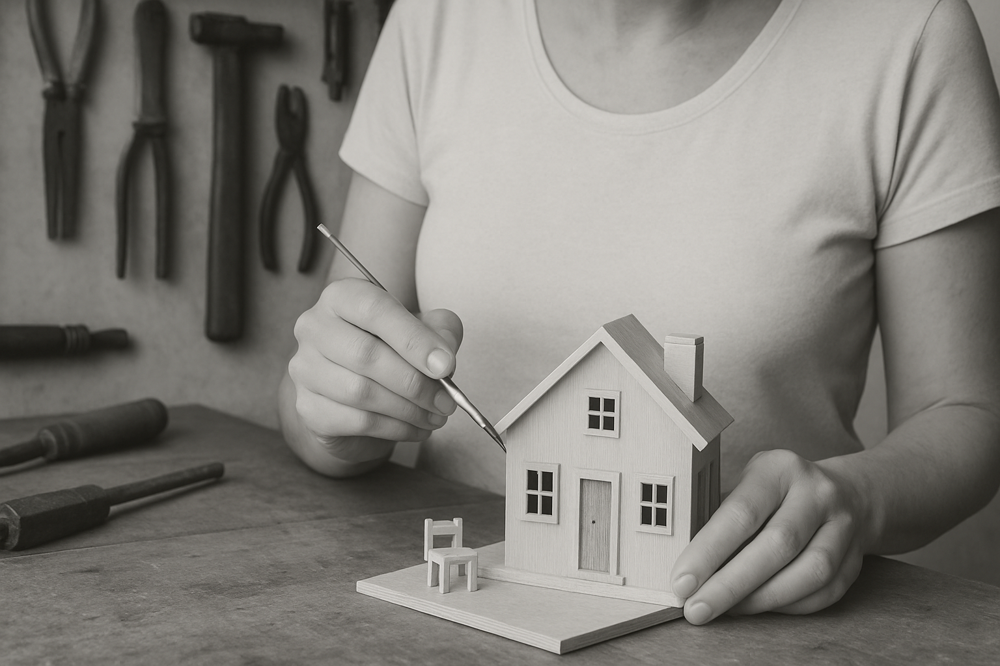

<section class="nps-section" aria-label="Náš PidiSvět">
  <div class="nps-inner">
    <div class="nps-grid">
      <!-- TEXT – část A (nadpis + první dva odstavce) -->
      <div class="nps-text nps-text-a">
        <h3 class="nps-heading">Náš příběh</h3>
        <p>
          V srdci každého domova se skrývá příběh. Ten náš začal u kousku dřeva,
          který se pod rukama proměnil v malý domeček, a tím otevřel dveře do celého PidiSvěta.
        </p>
        <p>
          PidiSvět je místo, kde se setkává fantazie s vůní dřeva. Každý kousek je ručně vyráběný,
          jedinečný a nese v sobě otisk radosti i lásky k detailu. Ať už jde o miniaturní stoličku,
          stromek před domem, střechu s komínkem, nebo maličké houby pod okny. Tyto drobnosti nejsou
          jen ozdobou, vyprávějí příběh o domově, bezpečí a teple.
        </p>
      </div>

      <!-- FOTO 1 – na mobilu je mezi texty, na desktopu vpravo nahoře -->
      <figure class="nps-photo nps-photo-1">
        
      </figure>

      <!-- TEXT – část B (zbylé odstavce) -->
      <div class="nps-text nps-text-b">
        <p>
          Naše domečky nejsou jen dekorací. Jsou pozvánkou do světa, kde i ta nejmenší věc má svůj význam.
          Každý kus je originál, pečlivě opracovaný, malovaný a složený tak, aby přinesl radost. Ať už stojí
          na poličce, pod vánočním stromkem, nebo je součástí osobního rituálu.
        </p>
        <p>
          PidiSvět vznikl z touhy vrátit do všedních dnů kousek kouzla. Protože věříme, že domov tvoří detaily,
          a že radost lze najít i v tom nejmenším.
        </p>
      </div>

      <!-- FOTO 2 – na mobilu až pod textem; na desktopu pod 1. fotkou -->
      <figure class="nps-photo nps-photo-2">
        
      </figure>
    </div>
  </div>
</section>


